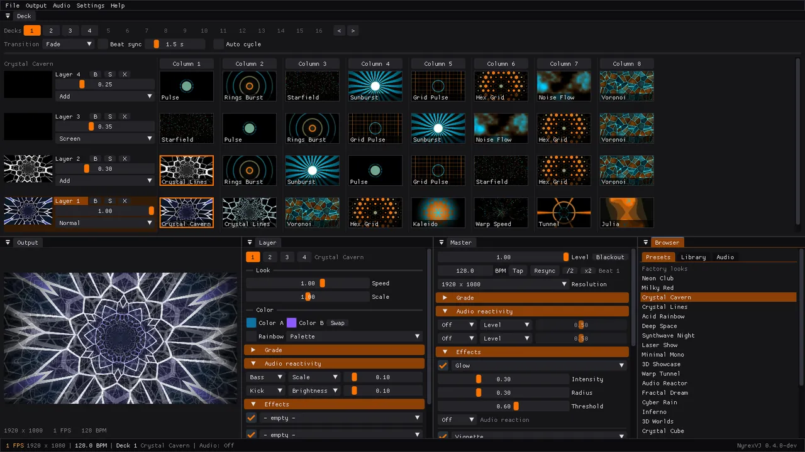
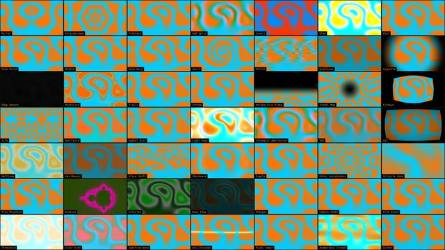

Clips und Effekte
Mehr als 50 Clips (Fraktale, Raymarching-3D-Szenen, Neon-Geometrie, Laser, Spektrum-Visuals) und mehr als 70 Effekte. Eigene Shader-Dateien lassen sich einfügen, auch von Shadertoy.
Eigene Shader-Clips →NyrexVJ ist ein kostenloses VJ-Programm im Sinne von Resolume Arena. Es spielt generative Clips und Videos auf Ebenen, legt Effekte darüber, folgt deiner Musik und schickt das Bild an OBS oder in ein Vollbild-Ausgabefenster. Natives C++ und OpenGL, keine Spiel-Engine, eine Programmdatei für Windows und eine für Linux.
Open Source (MIT-Lizenz), kostenlos, ohne Konto, ohne Werbung. Entwicklungsstände erscheinen als Nightly-Release, rechne also mit rauen Kanten.

Ein kurzer Rundgang. Die vollständige Liste steht in der README und in der Doku, die auf Englisch geschrieben ist.
Mehr als 50 Clips (Fraktale, Raymarching-3D-Szenen, Neon-Geometrie, Laser, Spektrum-Visuals) und mehr als 70 Effekte. Eigene Shader-Dateien lassen sich einfügen, auch von Shadertoy.
Eigene Shader-Clips →
Spiele .glb- und .gltf-Modelle wie jeden Clip ab oder baue im Clip Creator Szenen aus Formen, Modellen und Lichtern und speichere sie als portable .nyxclip-Dateien.
3D-Szenen →
Baue eigene Effekte in einem Node-Editor. Ein Graph aus 68 Nodes (Bild, Audio, Beat, Mathe, Farbe, Verzerrung, Rauschen, Formen) wird zu einem Shader, und Effekte sind kleine Dateien, die du teilen kannst.
Node-Effekt-Editor →
Ebenen und Effekte folgen dem System-Audio, einem Mikrofon oder einem Line-In. Steuere per MIDI-Controller oder über OSC, nutze eine Beat-Uhr mit Timecode und MIDI-Clock und schicke das Bild mit Spout an OBS oder mit NDI an andere Programme.
Show-Sync →
HAP-Clips gehen komprimiert zur Grafikkarte, andere Videos können Hardware-Decodierung nutzen, und der Monitor zeigt, was jeder Clip kostet. Gebaut, um neben VRChat zu laufen.
Bild- und Videoclips →
Füge Modulationsquellen und Bildquellen über eine kleine C-Schnittstelle hinzu. Plugins sind nativer Code und bleiben aus, bis du sie einschaltest.
Plugins →NyrexVJ steht unter der MIT-Lizenz. Code, Roadmap und die Entscheidungen dahinter liegen auf GitHub, Issues und Pull Requests sind willkommen. Die Oberfläche gibt es auf Englisch, Deutsch, Spanisch und Französisch.